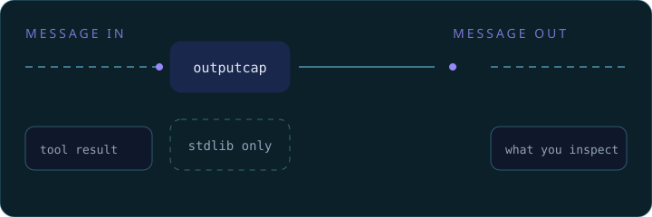

Install
consolepip install outputcap
Use
pythonfrom outputcap import cap
def read_file(path):
text = Path(path).read_text(errors="replace")
capped = cap(text, max_chars=4000, directory=".agent/outputs")
return capped.message() # bounded preview + "[output truncated: 812 kB … at …]"
def read_slice(path, start, end): # the follow-up tool the model can call
return cap(...).read(start, end)
Reading the rest back:
pythoncapped.read(0, 2000) # any slice of the full text
capped.read() # all of it
read_handle(capped.handle)
slices(capped.read(), 2000) # [(0, 2000), (2000, 4000), …] for a paging tool
console$ outputcap build.log # preview on stdout, size on stderr
$ outputcap api.json --max-chars 2000 --store .agent/outputs
$ outputcap build.log --note-only # just the one-line summary
How the budget splits
The default split is 80% head and 20% tail, so the summary at the top and the failure at the bottom both survive. Choose it explicitly when you know better:
pythoncap(text, max_chars=2000, head=2000, tail=0) # a JSON document: the start is what matters
cap(text, max_chars=2000, head=0, tail=2000) # a log: only the end matters
The note is a single line, so a model reading the preview knows the value was cut, how big it was, and where the rest is:
[output truncated: 812441 chars, showing the first 3200 and the last 799; full value at .agent/outputs/output-1a2b3c4d.txt]Rules
- Nothing is truncated below the budget;
capis a no-op when the value already fits. - A dict or list becomes indented JSON, because that is what a model reads best.
- With
directory, the full text is written once and the in-memory copy is dropped; without
it the value stays in capped.full and capped.read() still works.
slices()provides the ranges for a paging tool, with optional overlap so a match on a
boundary is not lost.
- The budget is in characters, not tokens: a token count needs the model's tokenizer,
which this library deliberately does not have.
Limits
- No compression, no summarising, no embedding: the full value is kept verbatim and read
back verbatim. A summary would lose exactly the detail a follow-up needs.
- A budget below 16 characters drops the tail, because a separator costs more than it
saves.
- Files are written with a random name unless you pass
name=; nothing cleans the
directory up, that is your run's job.
Development
consolepython -m venv .venv
.venv/bin/pip install -e ".[test]"
.venv/bin/pytest
License
MIT.